Jetsmark
Grobkörniger, bräunlicher Granit
Höhe über der Erde: 118 cm
Größte Breite: 32 cm
Größte Dicke: 65 cm
Runenhöhe: 11,5 / 12 / 13 cm
Runeninschrift:
Hove setzte den Stein für seine Brüder Thoriak und Ride
24 - Jetsmark (auch Pandrup Stein genannt) - Letztes Update 17.08.2025
Listennummer : DR 160 / DK NJy 13
| Navidaten: 57.21095 9.66861 oder: Kvorupvej 94, 9490 Pandrup |
Transliteration: hufi : sati : stin : ift : bruþr | siną þurlak auk : hriþi
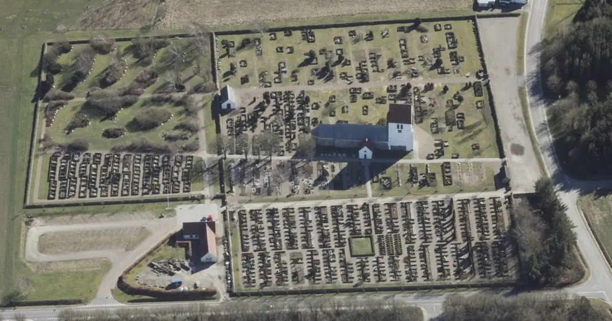
Das ist ein Luftfoto vom 01.04.2023 von Skråfoto das die Kirche von Jetsmark zeigt. Skråfoto ist eine Webanwendung, die von Klimadatastyrelsen weltweit kostenlos bereitgestellt wird - Freie Nutzung unter Beachtung der Lizenz: CC BY 4.0. Die Aufnahmen werden seit 2017 alle zwei Jahre erneuert und neben einer Senkrechtaufnahme wird ein Schrägbild aus jeder Himmelsrichtung angeboten, das man über eine Adresssuche aufrufen kann.
Ich habe die Kirche von Jetsmark bislang dreimal besucht. Zuerst am Samstag, 10.08.1996, dann am Samstag, 01.07.2000, und nun im Rahmen meiner 2022er Jütland Wikingertour am Donnerstag, 02.06.2022. Oha, auch schon wieder über 20 Jahre her!
Das Foto im linken Frame stammt von dem ersten Besuch im Jahr 1996. Nun konnte ich diese Fotografien anfertigen. Außerdem wurde ich von einem freundlichen Herrn, der gerade mit dem Staubsauger in der Kirche zu Gange war, auf einen deutschsprachigen 4-seitigen sw Flyer, der im Vorraum kostenfrei aufliegt, hingewiesen.
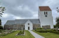 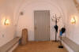 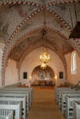 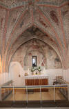 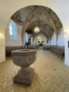 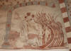 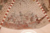
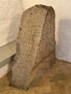 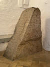 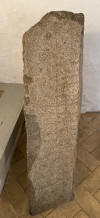 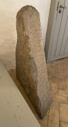 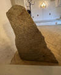 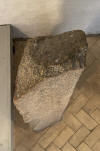
Bei der Ausgrabung eines Bauplatzes auf dem Hof Bisgård in Pandrup fand der Besitzer Mads Ottesen (*13.11.1817 - 01.12.1891 - link-LIVES)
 Bildquelle:
arkiv.dk /
Aalborg Stadsarkiv -
Lizenz:
Urheberrechtlich geschützt - Erlaubnis auf Anfrage erteilt - 10.02.2025
Bildquelle:
arkiv.dk /
Aalborg Stadsarkiv -
Lizenz:
Urheberrechtlich geschützt - Erlaubnis auf Anfrage erteilt - 10.02.2025
im Jahre 1855 einen alten, versteckten und inzwischen mit Erde angefüllten Erdkeller aus Feldsteinen im Boden.
An der Stelle, wo vermutlich der Abgang zu diesem Keller lag, fand sich ein 2½ Ellen (DK Maßeinheit: 1 Elle = 62,77 cm) langer Stein mit flachen Seiten. Bei der Untersuchung dieses Steines zeigte sich auf der einen Seite eine Inschrift. Später fuhr der Besitzer den gefundenen Stein zur Kirche, wo er im Waffenhaus aufgestellt wurde. Heute noch ist er dort in einer Ecke, teilweise in die Erde eingelassen, zu finden.
DK-9490 Pandrup, Blokhusvej 56, Bisgård - Luftfoto von 1947 / Luftfoto von 1957 / Google Maps mit der Option Google StreetView - Heute mit "Bisisgaard" beschriftet.
Die Forschung geht heute davon aus, dass die Inschrift von einem schwedischen oder norwegischen Runenmeister geritzt wurde. Der Stein wird in die Zeit von 970 bis 1020 datiert. Die Inschrift verläuft in zwei senkrechten Runenbändern in der sogenannten Parallelordnung, beginnt links und wird jeweils von unten nach oben gelesen.
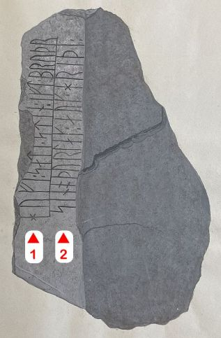
Bildquelle: Zeichnung von 1856 von Rasmus Henrik Kruse - siehe unten - Leserichtung von mir eingefügt.Die erste zeichnerische Wiedergabe erfolgte von Rasmus Henrik Kruse (*07.08.1796 - 30.05.1877, Landschaftsmaler - link-LIVES - Heirat 21.12.1851)
 Bildquelle:
Det Kgl. Biblioteks billedsamling - Lizenz:
Public Domain
Bildquelle:
Det Kgl. Biblioteks billedsamling - Lizenz:
Public Domain
in seiner Abhandlung " "Nørrejyllands Mærkværdigheder i det 19. Aarhundrede", in der "Tillæg I" von 1856 (Blatt 3f., Tafel b).


Dieses tolle Werk wird heute im Nationalmuseum in Kopenhagen, in dem angeschlossenen "Antikvarisk-Topografisk Arkiv", verwahrt. Dort durfte ich es am 27.09.2022 mit mehreren anderen Kleinode aus deren Sammlung in Händen halten und fotografieren.
Carl Christian Rafn (*16.01.1795 - 20.10.1864, Altertumsforscher - link LIVES - Bestattungsprotokoll)
 Bildquelle: Zeichner
Magnus Petersen -
Det Kgl. Biblioteks billedsamling - Lizenz:
Public Domain
Bildquelle: Zeichner
Magnus Petersen -
Det Kgl. Biblioteks billedsamling - Lizenz:
Public Domain
hat im Jahr 1856 in seinem Werk "Antiquités de l'Orient, monuments runographiques" auf der S. 219 ff. diesen Runenstein behandelt. Seine Wiedergabe der Inschrift geht auf eine Mitteilung an die Altertümerkommission durch Stud. theol. Nicolai Christian Christensen aus Aaby (*26.07.1833 - 11.07.1903 - link-LIVES) mit dessen beigefügter Zeichnung (Verbleib unbekannt) zurück.
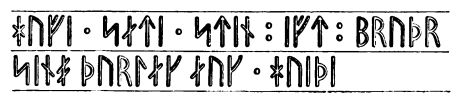
In der Antiquarisk tidsskrift / udg. af det Kongelige nordiske oldskrift-selskab / 1855-1857 berichtet er mit diesem Eintrag auf der S. 116 zu der Neuanmeldung des Runensteinsfunds.
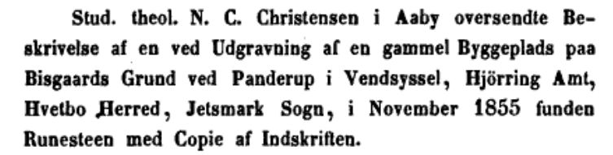
Prof. P. G. Thorsen (*07.08.1811 - 06.05.1883, Bibliothekar, Runenforscher und Historiker - link-LIVES - Artikel: Levnedsbeskrivelser af de ved Københavns Universitets Firehundredaarsfest promoverede Doktorer, Illustreret Tidende 1882, Nr. 1235 - vom 27.05.1833 / Grabstein in Varde / Eheschließung in Varde am 19. August 1848)
 Bildquelle: Fotografie zw. 1863-1900 von
Fotograf Budtz Müller (*26.12.1837 -
30.12.1884) -
Det Kgl. Biblioteks billedsamling - Lizenz:
Public Domain
Bildquelle: Fotografie zw. 1863-1900 von
Fotograf Budtz Müller (*26.12.1837 -
30.12.1884) -
Det Kgl. Biblioteks billedsamling - Lizenz:
Public Domain
hat den Runenstein in seinem Werk "De danske runemindesmærker beskrevne og forklarede, anden Afdeling, Jyllands Runemindesmærker, II. Text" ab der Seite 185 angeführt. Eine Zeichnung von Prof. Julius Magnus Petersen (*04.09.1827 - 31.01.1917, Archäologischer Zeichner und Restaurator - link-LIVES - Bestattungsprotokoll)
 Bildquelle: Fotografie
von 1903 von Fotograf Marius Christensen
(*24.06.1874 -
25.06.1907) -
Det Kgl. Biblioteks billedsamling - Lizenz:
Public Domain
Bildquelle: Fotografie
von 1903 von Fotograf Marius Christensen
(*24.06.1874 -
25.06.1907) -
Det Kgl. Biblioteks billedsamling - Lizenz:
Public Domain
findet sich im "Band I. Afbildninger, 1879, unter der Nr. 79" - Google Scan.
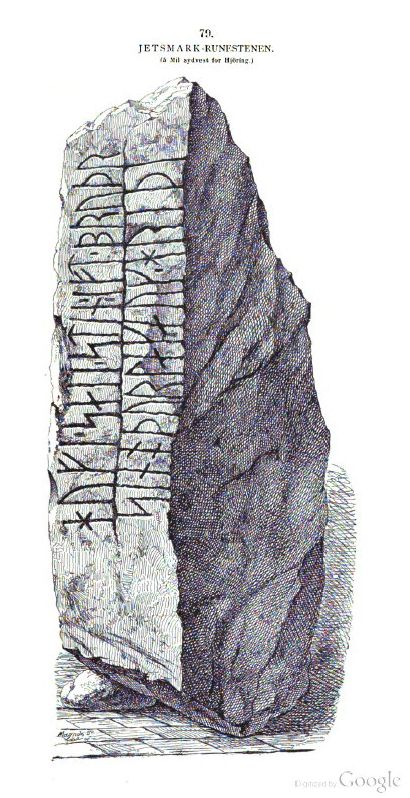
In der Sammlung von P. G. Thorsen, die in Kopenhagen in der Königlichen Bibliothek als NKS 3296 kvart in mehreren Pappschachteln verwahrt wird (Bezeichnet als: P. G. Thorsens optegnelser, tegninger m.m. vedrørende runer og runemindesmærker - überführt aus der Kopenhagener Universitätsbibliothek 1929 - Gemäß Ministerialschreiben vom 04.03.1929; früher benannt als Additamenta 612 kvart) - findet sich in der Pappschachtel mit der Nummer 17 diese tolle Zeichnung von Magnus Petersen (*04.09.1827 - 01.02.1917, Archäologischer Zeichner und Restaurator), die er auf den 06.07.1870 datiert hat.

Prof. Ludv. F. A. Wimmer (*07.02.1839 - 29.04.1920, Philologe und Runenforscher - link-LIVES - Politiets registerblade - Bestattungsprotokoll)
 Bildquelle:
Fotografie zw. 1877-1900 von Fotograf Hansen & Weller
-
Det Kgl. Biblioteks billedsamling - Lizenz:
Public Domain
Bildquelle:
Fotografie zw. 1877-1900 von Fotograf Hansen & Weller
-
Det Kgl. Biblioteks billedsamling - Lizenz:
Public Domain
bringt den Runenstein in seinem großformatigen Werk "De danske runemindesmærker undersøgte og tolkede af Ludv. F. A. Wimmer, Andet Bind, Runestenene i Jylland og på øerne. 1899-1901, Nr. 17, S. 125" mit Text und Bild / Querschnitt Zeichnung - hier eigener Scan aus der in meiner Sammlung befindlichen Ausgabe. Wimmer hat den Runenstein persönlich vor Ort am 14.August 1878 untersucht.
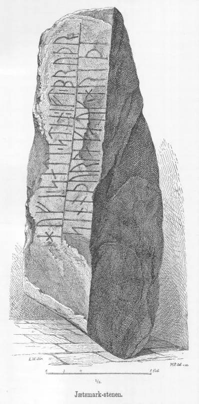
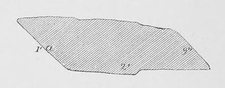
Er hat seine jahrelangen Aufzeichnungen der
"Kgl.
Bibliotek" in
Kopenhagen überlassen. Ein
Verzeichnis darüber wurde 1915 in Buchform herausgegeben
-
In seinen Unterlagen in der Königlichen Bibliothek befinden sich unter "III - Originaltegninger af de danske Runemindesmærker, udførte paa Undersøgelsesrejserne af Magn. Petersen og kontrollerede paa Stedet af Ludv. Wimmer, samt Prøvetryk af de paa Grundlag af de nævnte Tegninger, Aftryk o. s. v. til De danske Runemindesmærker" udførte Afbildninger med Wimmers Rettelser" zu dem Runenstein von Jetsmark unter der Nr. 33 seine Aufzeichnungen von 1878, die ich am 27.09.2022 sichten durfte.


Daraus habe ich bei dem Termin diese Zeichnung von Magnus Petersen, die er auf den 14.08.1878 datiert hat, abfotografiert.

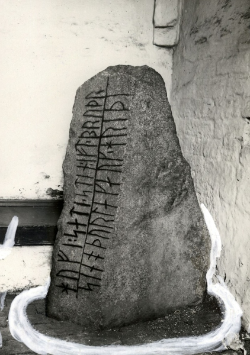
Fotografie von Erik Moltke (*04.04.1901 - 19.10.1984, Runologe, Historiker - link-LIVES)
 Bildquelle: Scan von Buchumschlag "Runerne i Danmark og ders
oprindelse" - Erik Moltke - 1976 - Lizenz:
CC-BY-SA
Bildquelle: Scan von Buchumschlag "Runerne i Danmark og ders
oprindelse" - Erik Moltke - 1976 - Lizenz:
CC-BY-SA
vom 16.06.1931.
Lizenz: CC-BY-SA - Der Digitale Datenbank des Nationalmuseums Kopenhagen entlehnt.
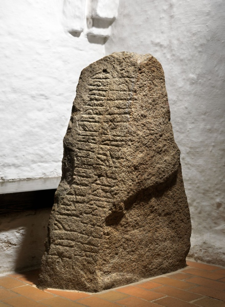
Im Vorfeld zu dem 2016 erschienenen Buch von Lisbeth M. Imer (*1973, Runologin am Nationalmuseum Kopenhagen) "Danmarks Runesten - en fortælling" reiste sie mit dem Fotografen Roberto Fortuna zur Bestandsaufnahme durch die Lande. Dieser hat die Runensteine abends bei Dunkelheit mit Schräglicht aufgenommen und darüber wirklich herausragende Fotos erzielt. So auch dieses Foto aus dem März 2012.
Lizenz: CC-BY-SA - Der Digitale Datenbank des Nationalmuseums Kopenhagen entlehnt.
Die Informationen der dänischen Online-Runen-Datenbank zu diesem Runenstein (in dänischer Sprache) finden sich hier.
Die Informationen in "Fund og Fortidsminder" zu dem Runenstein finden sich hier. Darin ist inzwischen dieser Zustandsbericht des Steinrestaurators Leif Vognsen aus dem Jahr 2018 eingebettet.
Über diesen Link finden sich zu dem Runenstein Informationen des Forschungsprojektes "Runes" der Akademie der Wissenschaften zu Göttingen.
Via Google StreetView kann man heutzutage auch durch die Kirche in Jetsmark spazieren und sich die herrlichen Kalkmalereien / Deckengemälde, aber auch den Runenstein, in aller Ruhe anschauen. Insbesondere im Hinblick auf die großflächige Deckenbemalung eine super Sache!
Die Kirche in Jetsmark ist eine große romanische Granitquaderkirche, die um 1100 gebaut wurde. Die sehr schönen Kalkmalereien - im Jahre 1474 vollendet - wurden im Laufe der Jahre übertüncht und erst 1911 wieder freigelegt, so wie man sie heute sehen kann.
In Danmarks Kirker ist die Region "XI. Hjørring" aber leider noch nicht veröffentlicht, so dass man dort vergeblich nach Informationen zu dieser Kirche sucht. Allerdings liegt in der Kirche ein 4-seitiges Infoblatt mit zahlreichen Erläuterungen zur Baugeschichte, aber insbesondere zu den Kalkmalereien, auch in deutscher Sprache, kostenfrei auf.